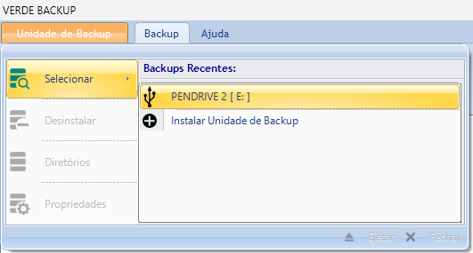

Diretórios locais para backup
O programa funciona clonando a estrutura de diretórios de um drive local numa Unidade de Backup. Para definir quais diretórios serão clonados, é necessário que a Unidade de Backup esteja instalada.
Inserindo os diretórios locais para backup
Para inserir os diretórios locais para backup na Unidade de Backup, siga os seguintes passos:
1. Vá ao menu Unidade de Backup/Selecionar e clique no nome da Unidade de Backup.

2. Você terá duas opções para acessar o diálogo para manutenção de diretórios para backup:
Na primeira opção, acesse o menu novamente, que mudou para o contexto da Unidade de Backup e clique em Diretórios.
Na segunda opção, na barra de ferramentas Backup, clique em Local.
3. Na caixa de diálogo DIRETÓRIOS PARA BACKUP, clique no botão Inserir.:
Na caixa de diálogo Procurar Pasta, selecione o diretório de backup e clique no botão OK.
4. Faça isso para cada diretório local que fará o backup na Unidade de Backup.
Removendo os diretórios locais para backup
Para remover diretórios para backup, siga os seguintes passos:
1. Vá ao menu Unidade de Backup/Selecionar e clique no nome da Unidade de Backup.
2. Acesse o menu novamente, que mudou para o contexto da Unidade de Backup e clique em Diretórios.
3. Na caixa de diálogo DIRETÓRIOS PARA BACKUP, selecione os diretórios que deseja remover e clique no botão Remover:
4. No diálogo para confirmação da exclusão, clique no botão Sim.